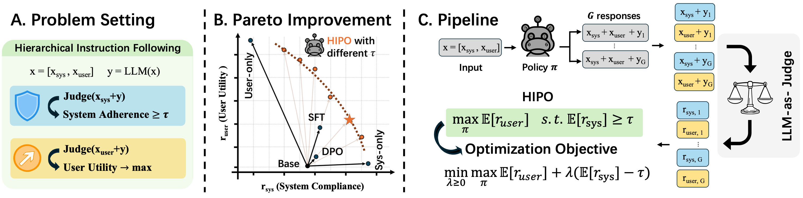
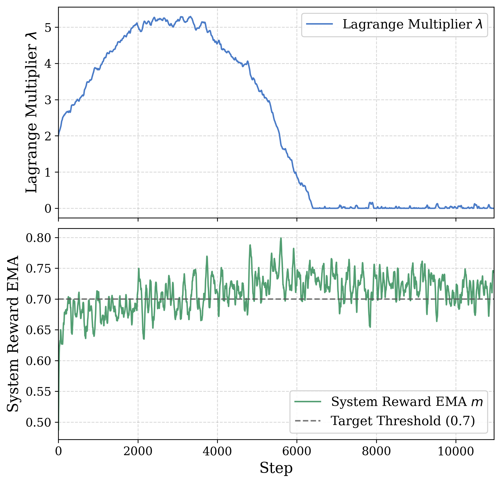

arXiv:2603.16152
HIPO: Instruction Hierarchy via Constrained Reinforcement Learning
EMNLP 2026 · Main Conference · October 2026 · pp. 3168–3191
HIPO models hierarchical instruction following as constrained optimization: system prompt compliance is the constraint, and user utility is optimized within the feasible region.
Abstract
Hierarchical Instruction Following (HIF) refers to the problem of prompting large language models with a priority-ordered stack of instructions. Standard methods like RLHF and DPO typically fail in this problem since they mainly optimize for a single objective, failing to explicitly enforce system prompt compliance. Meanwhile, supervised fine-tuning relies on mimicking filtered, compliant data, which fails to establish the priority asymmetry at the algorithmic level. In this paper, we introduce HIPO, a novel alignment framework that formulates HIF as a Constrained Markov Decision Process. HIPO elevates system prompts from mere input context to strict algorithmic boundaries. Using a primal-dual safe reinforcement learning approach, the algorithm dynamically enforces system prompt compliance as an explicit constraint, maximizing user utility strictly within this feasible region. Extensive evaluations across diverse model architectures (e.g., Qwen, Phi, Llama) demonstrate that HIPO significantly improves both system compliance and user utility. Furthermore, mechanistic analysis reveals that this constrained optimization autonomously drives the model to shift its attention toward long-range system tokens, providing a principled foundation for reliable LLM deployment in complex workflows.
Original abstract · EMNLP 2026 published version
Problem statement
A system instruction may require an assistant to respond with questions, while the user asks for a direct factual answer. Following the user request can then violate the higher-priority instruction. Hierarchical instruction following asks the model to help the user within the constraints set by the system.
The difficulty is the asymmetry between these objectives. A training signal that rewards a helpful answer can also reward a response that breaks the system's rules. HIPO makes that asymmetry explicit in the optimization problem. Paper, Section 5.1
Framework overview

Method
A hierarchical prompt is written as x = [x_sys, x_user]. The system prompt specifies global constraints, formatting rules, safety policies, or personas. The user prompt specifies the immediate task. HIPO treats these two prompt segments asymmetrically: the system prompt defines the compliance constraint used during training.
The optimization target is max E[r_user] subject to E[r_sys] >= tau. The two rewards are measured with separate LLM-as-judge calls: one judge evaluates whether the response follows the system prompt while ignoring the user task, and another evaluates whether the response satisfies the user prompt while isolating it from system constraints. This avoids mixing two different evaluation criteria in a single judgment.
Training uses a primal-dual update. If the batch-level system reward falls below the threshold tau, the Lagrange multiplier increases and penalizes policy updates that violate the system boundary. Once the constraint is satisfied, the multiplier decays and optimization focuses again on user utility. To reduce variance and avoid a separate value network, HIPO samples a group of responses for each prompt and applies GRPO-style in-group advantage normalization.
Key findings
SystemCheck provides 1,800 training and 200 held-out instruction pairs, split between conflicting and aligned instructions. System compliance and user utility are separate LLM-judge scores in [0, 1], not binary success rates.
1. Better utility under instruction conflict
For Qwen3-8B, HIPO reaches 0.70 compliance / 0.72 utility, versus SFT's 0.66 / 0.38 and DPO's 0.65 / 0.33. Table 1
| Method | Conflict: compliance | Conflict: utility | Aligned: compliance | Aligned: utility |
|---|---|---|---|---|
| SFT | 0.66 | 0.38 | 0.67 | 0.56 |
| DPO | 0.65 | 0.33 | 0.68 | 0.38 |
| HIPO | 0.70 | 0.72 | 0.77 | 0.81 |
2. Gains also appear when instructions agree
On the aligned split, Qwen3-8B reaches 0.77 compliance / 0.81 utility, compared with SFT's 0.67 / 0.56. The improvement is therefore not limited to handling direct conflicts. Table 1
3. The threshold changes the observed tradeoff
For Qwen3-1.7B, thresholds of 0.50, 0.65, and 0.75 give compliance/utility pairs of (0.51, 0.75), (0.65, 0.65), and (0.73, 0.47). A higher target can sacrifice utility, and observed compliance need not reach the target exactly. Section 5.2
4. Safety gains need not come with high over-refusal
With a safety system prompt, Qwen3-1.7B's WildJailbreak attack success rate is 0.2255, versus SFT's 0.3250. Its over-refusal rate is 0.0857, versus 0.2809. MMLU-Redux is 0.5916, close to the base model's 0.5946. These results concern the evaluated model and benchmarks. Table 2
5. Attention shifts toward the system segment
On 200 paired SystemCheck samples at response onset, Qwen3-1.7B's system/user attention ratio rises from 9.218 to 9.719. This is an observational signature of the trained model, rather than evidence that the attention shift causes the behavioral improvement. Section 6 and Table 3
Optimization dynamics
The Lagrange multiplier rises when system compliance is below the threshold and decays after the constraint is satisfied. This feedback adjusts the relative weight of compliance and utility during training. The constraint is on expected reward and does not guarantee compliance for every response.
In safety evaluations, HIPO also reduces attack success rates when safety-oriented system prompts are present, without collapsing into the over-refusal behavior observed in some supervised baselines.

Attention measurements
On 200 SystemCheck samples at response onset, HIPO shifts attention toward the system segment and farther prompt positions compared with the base Qwen3-1.7B model.
| Metric | Base | HIPO | Delta |
|---|---|---|---|
| System attention mass | 0.8222 | 0.8272 | +0.0050 |
| System/user attention ratio | 9.218 | 9.719 | +0.501 |
| Far/near attention ratio | 3.1703 | 3.2746 | +0.1043 |
Relation to SFT and DPO
SFT learns from demonstrations; DPO optimizes offline preference pairs. HIPO instead constrains expected system compliance and optimizes user utility with a learned Lagrange multiplier. It still combines reward signals in a scalar advantage during each update. The distinguishing feature is that the multiplier adapts to constraint shortfall, rather than remaining a fixed preference weight.
HIPO uses GRPO-style group normalization during training. Unlike inference-time attention interventions such as Split-Softmax, ordinary HIPO inference produces one response without an external judge or a manual change to attention. Sections 4 and 5.1
Limitations
The compliance constraint holds in expectation. It is not a deterministic guarantee for each answer: at a target of 0.7, the Phi-3-3.8B conflicting-split score is 0.68. Highly adversarial or out-of-distribution instructions can still cause deviations.
Training and evaluation rely on LLM judges, which add computational cost and evaluator subjectivity. Attention analysis is observational. The work also assumes that access to the system-instruction interface is protected; compliance alone does not make a malicious system prompt benign. Limitations and ethical considerations
BibTeX
@inproceedings{chen-etal-2026-hipo,
title = {{HIPO}: Instruction Hierarchy via Constrained Reinforcement Learning},
author = {Chen, Keru and Luo, Jun and Lin, Sen and Liang, Yingbin and Velasquez, Alvaro and Bastian, Nathaniel D. and Zou, Shaofeng},
booktitle = {Proceedings of the 2026 Conference on Empirical Methods in Natural Language Processing},
month = oct,
year = {2026},
address = {Budapest, Hungary},
publisher = {Association for Computational Linguistics},
pages = {3168--3191},
doi = {10.18653/2026.emnlp-main.138},
url = {https://aclanthology.org/2026.emnlp-main.138/}
}